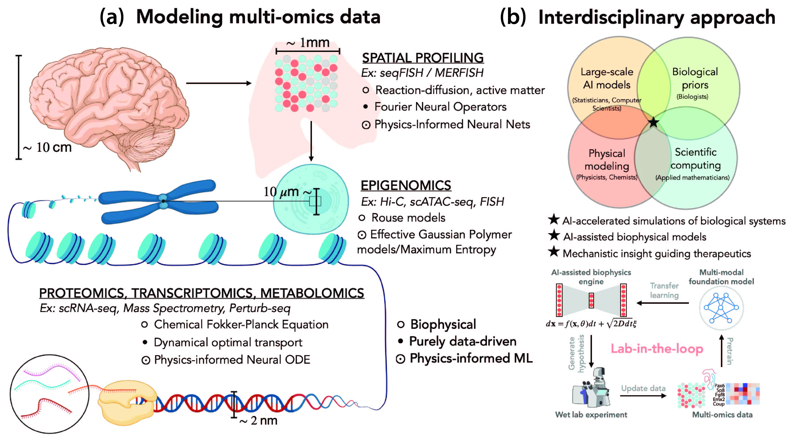

AI-assisted biophysical modeling of multi-omics data.(a) A range of analytical technologies across spatial scales generate diverse single-cell resolution datasets, including spatial transcriptomics, proteomics, and high-resolution imaging. These measurements provide complementary views of cellular state, structure, and dynamics.
Both classical biophysical models and modern data-driven methods are used to construct predictive representations from such datasets.
(b) Building accurate predictive models requires a tightly integrated interdisciplinary effort, combining experimental, computational, theoretical, and life-sciences expertise. This collaboration enables the development of an automated lab-in-the-loop framework, where iterative cycles of modeling, simulation, and experimentation accelerate hypothesis generation and discovery in the life sciences.